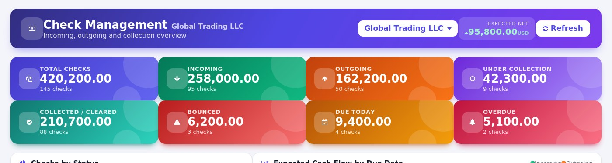
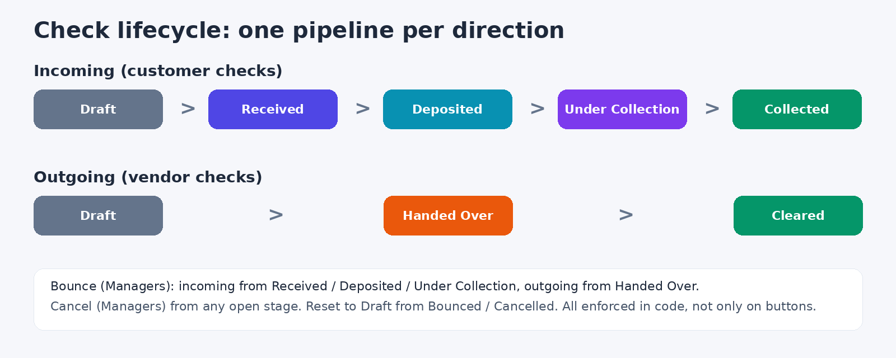
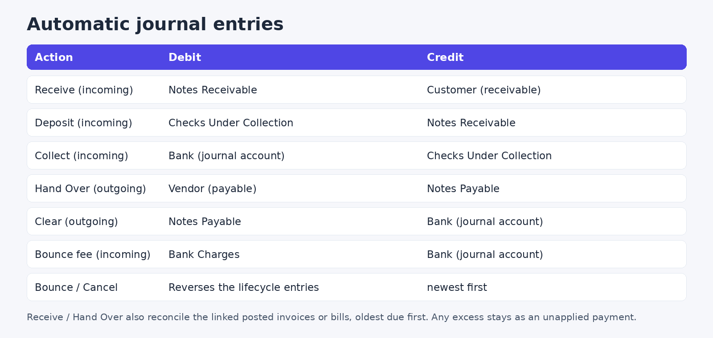
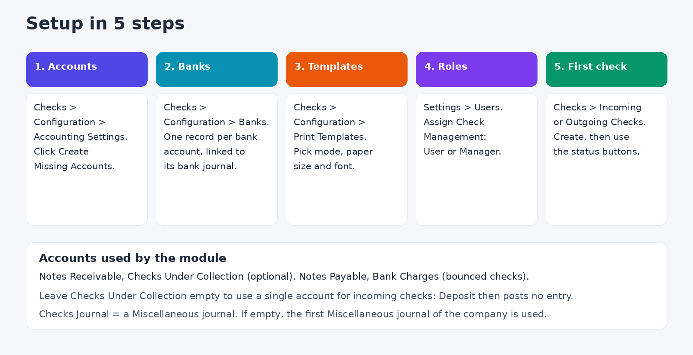
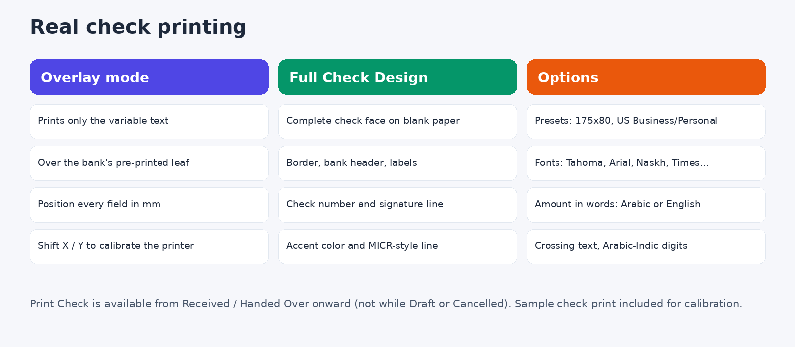

Track every incoming and outgoing check from receipt to bank clearing — with automatic accounting, real check printing, and a live, multi-company dashboard.
KPI cards, a status breakdown, expected cash flow by due date, top banks and partners, and everything due in the next 30 days — each element is clickable and drills straight into the filtered list. Switch between companies from the built-in company selector and the whole dashboard, including the drill-down lists, follows along.


| 🔄 |
Full lifecycle per direction Incoming: Draft → Received → Deposited → Under Collection → Collected. Outgoing: Draft → Handed Over → Cleared. Bounce or cancel from any stage. |
| 🏦 |
Smart bank & journal autofill Each bank carries its own accounting journal and account number — picking a bank on a check fills both automatically (still editable). |
| 📒 |
Automatic, reversible journal entries Notes receivable / payable, checks under collection, bank charges on bounce, and reconciliation with the settled invoices or bills — no manual entries needed. |
| 🖨️ |
Real check printing Position fields over a bank's pre-printed leaf, or use Full Check Design mode for a complete check face on blank paper, in common preset sizes or a custom size and font. |
| 🔢 |
Separate, per-company sequences Incoming (CHK-IN) and outgoing (CHK-OUT) checks each get their own numbering, automatically scoped per company. |
| 🔤 |
Amount in words (Tafqeet) In Arabic or English, generated automatically on the printed check. |
| 🌓 |
Dark mode & scrollable dashboard The dashboard adapts to your color scheme automatically and scrolls cleanly on any screen size. |
| 🔐 |
Role-based permissions User / Manager access groups enforced both on menus and on sensitive actions (Bounce, Cancel, Reset to Draft) — not just in the UI. |
| 🏢 |
Built for multi-company Every model, security rule and accounting entry is company-scoped, and the dashboard follows whichever company (or companies) you have active. |
Any company that receives checks from customers or issues checks to vendors: trading, contracting, distribution, services, real estate. If you track post-dated checks in spreadsheets today, this replaces them and keeps the accounting in sync.
Each direction has its own kanban pipeline and form status bar. Status changes are validated in the model itself, so they cannot be bypassed by editing the record directly.

Every status change posts its own journal entry on a Miscellaneous journal (you can switch auto-posting off in the settings). Receiving or handing over a check also reconciles the linked invoices or bills, oldest due date first. Bouncing reverses the whole trail, newest entry first, and reopens the customer or vendor balance.

Setup takes a few minutes. Everything is under the Checks > Configuration menu, visible to Check Managers.

Open Checks > Configuration > Accounting Settings (one record per company). Click Create Missing Accounts to create the four accounts automatically, or pick your own from your chart of accounts.
| Setting | What it does |
|---|---|
| Create Accounting Entries | On by default. Turn off if you only want to track checks without posting entries. |
| Checks Journal | A Miscellaneous journal for the receive, deposit, hand over and bounce entries. If empty, the first Miscellaneous journal of the company is used. |
| Notes Receivable (Checks in Hand) | Debited when an incoming check is received. |
| Checks Under Collection | Debited when an incoming check is deposited. Optional: leave empty to use one account for incoming checks, and Deposit then posts no entry. |
| Notes Payable (Issued Checks) | Credited when an outgoing check is handed over. |
| Bank Charges (Bounced Checks) | Debited with the bank fee of a bounced incoming check. |
Open Checks > Configuration > Banks and create one record per bank account (for example "NBE - EGP" and "NBE - USD"). Choose the Bank Journal (type Bank); the Account Number is filled from the journal's bank account and can be edited. Bank names are unique per company, and each journal can belong to one bank only.
When a user picks the bank on a check, the Bank Journal and Account Number are filled in automatically (still editable).
Open Checks > Configuration > Print Templates and create a template for your check leaf (details in the next section). Link it to a bank to use it automatically for that bank's checks, or leave the bank empty for a template that fits any bank.
In Settings > Users, give each user Check Management: User or Manager (see the permissions table below). Administrators are Managers by default.
Print the check itself from the Print Check button (available once the check is Received or Handed Over), and print the record as a document with Print Details. A sample print is included to calibrate the printer.

Under Checks > Reports: Checks Received, Checks Sent, Maturity Analysis, Overdue Checks and Bounced Checks, each as a filterable list with group-by and pivot views. The Checks Statement, Maturity / Aging and Bounced Checks reports can also be printed as PDF. A daily scheduled action creates a "Check Due Reminder" activity for open checks due today or tomorrow.
| Action | User | Manager |
|---|---|---|
| See checks, banks, dashboard and reports | Yes | Yes |
| Create and edit checks | Yes | Yes |
| Receive, Deposit, Under Collection, Collect, Hand Over, Clear | Yes | Yes |
| Print Check and Print Details | Yes | Yes |
| Bounce, Cancel, Reset to Draft | No | Yes |
| Delete checks, banks and movements | No | Yes |
| Configuration menu (banks, print templates, accounting settings) | No | Yes |
Bounce, Cancel and Reset to Draft are enforced in the model, not only hidden on the buttons. Journal Entries menu requires accounting rights. Every model has a multi-company record rule.
Can I use it without linking invoices? Yes. Then the full amount stays on the partner account as an unapplied payment.
Can I track checks without accounting entries? Yes: switch off "Create Accounting Entries" in Accounting Settings.
Why can't I Collect or Clear a check? The check's bank needs a Bank Journal with a default account. Set it on the bank record.
Why can't I print a check? Printing is blocked while a check is Draft or Cancelled. Move it to Received or Handed Over first.
Bug-fix updates are included. Installation, configuration and customization support: Eng. M.Aboelmagde (YouTube: Odoo Lab, @odoolab).